A birch console that holds all three.
The MPK mini IV on the left, under an engraved black acrylic mask that rests on it; the macro pad on the right in line with the keys, in a cradle like the Flip's; the Miyoo Flip behind the pad, with the screen at 65°. One black top, at the same height from side to side: 583.5 × 244 mm, 46 mm high. The hub and the cables sit underneath, covered.

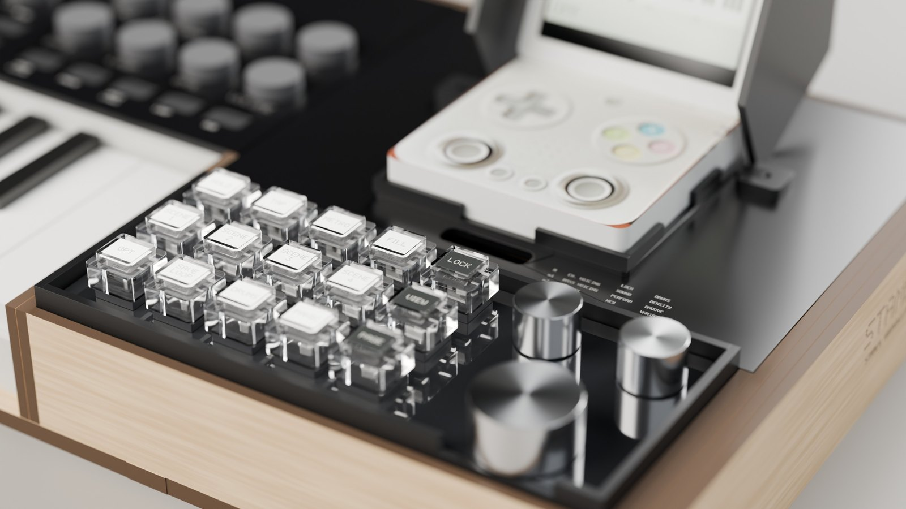

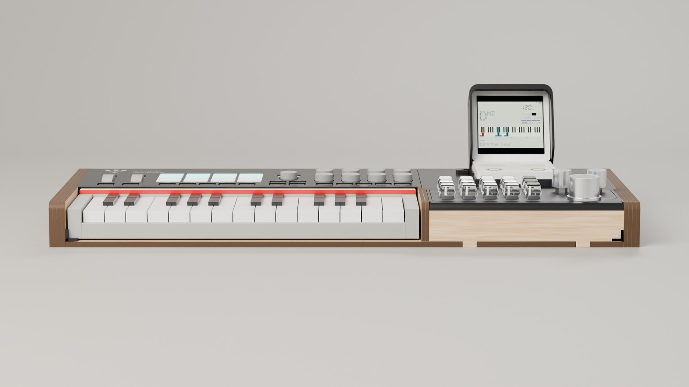
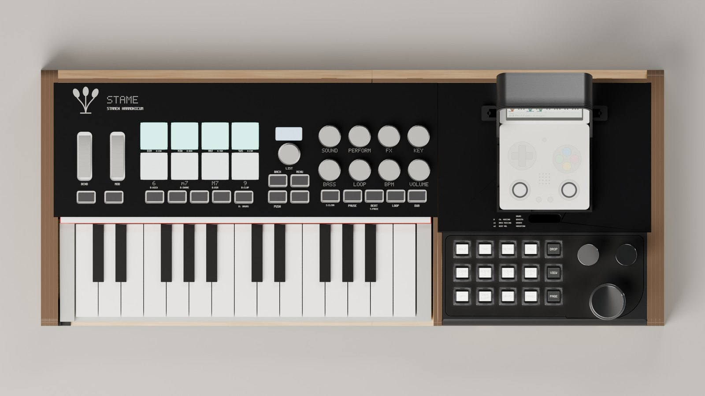
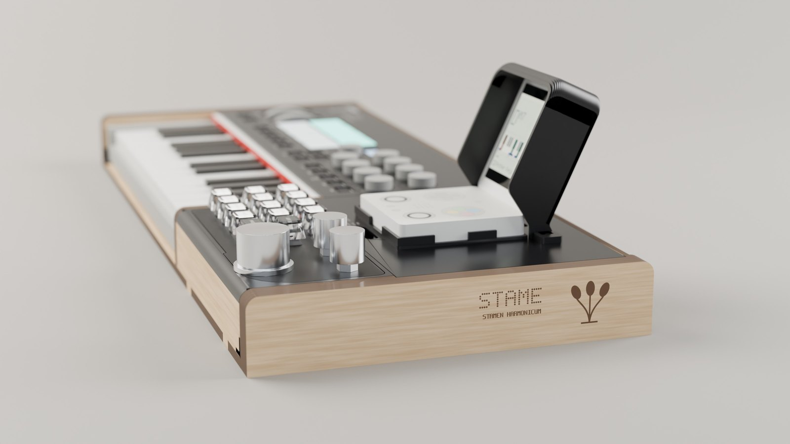
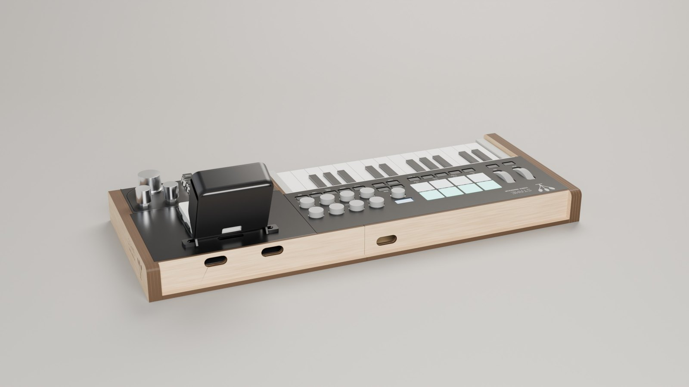
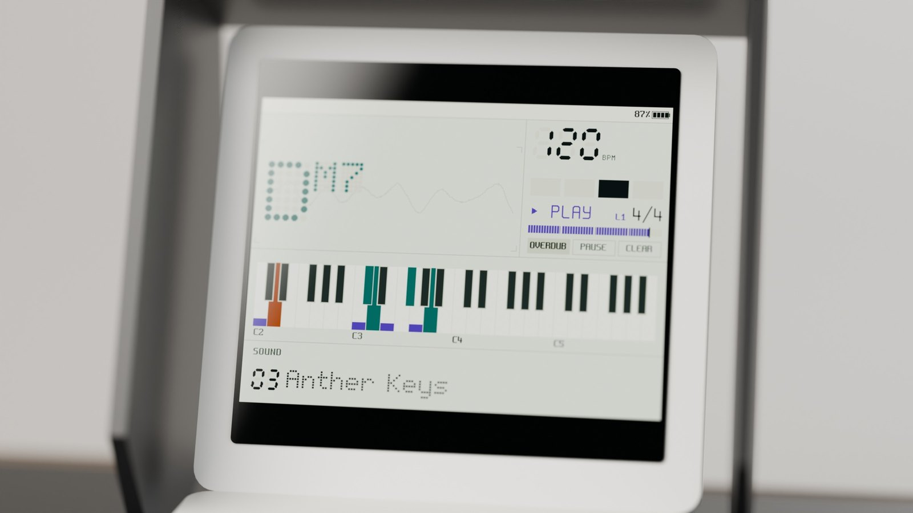
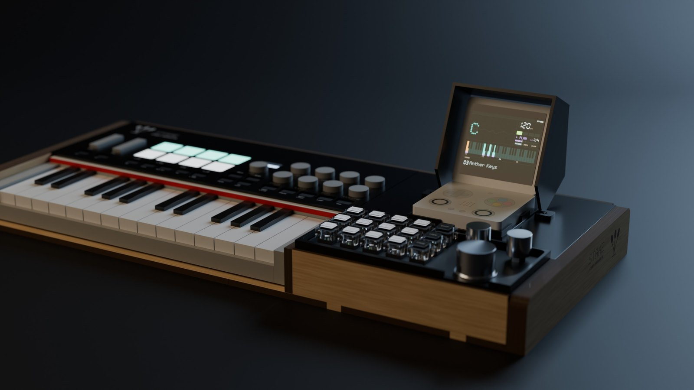
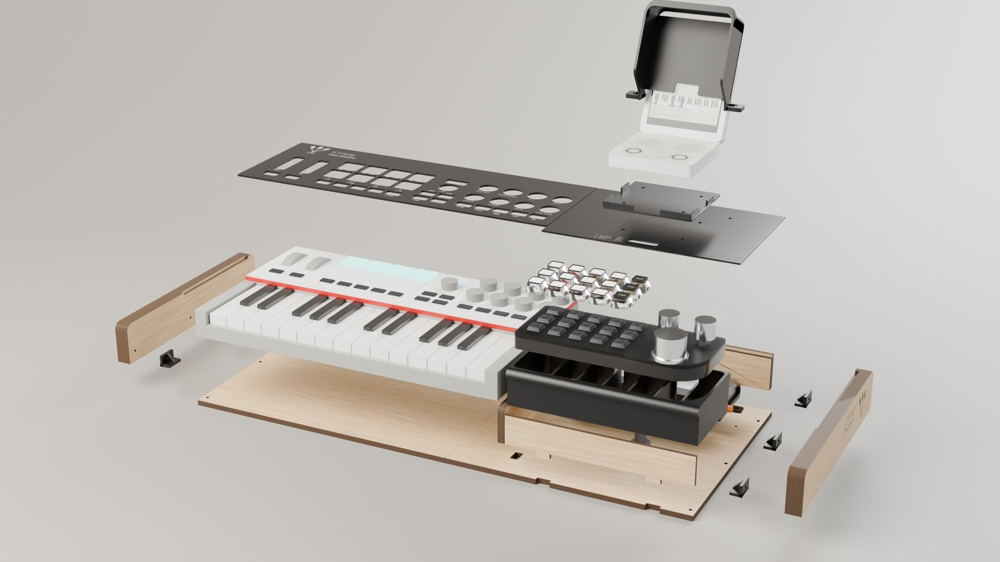
Nine steps, tabs in slots and glue.
No screws in sight: the back, the rib and the front wall lock into the base with tabs, the sides are four layers of 4 mm birch. In amber, the parts each step adds.


Five sheets for the laser, five prints, one sheet of paper.
Sheets of 390 × 390 for an AtomStack S10, nested by material; red is cut, brown is engraved. The sides and the mask carry the same dot lettering as the screen.


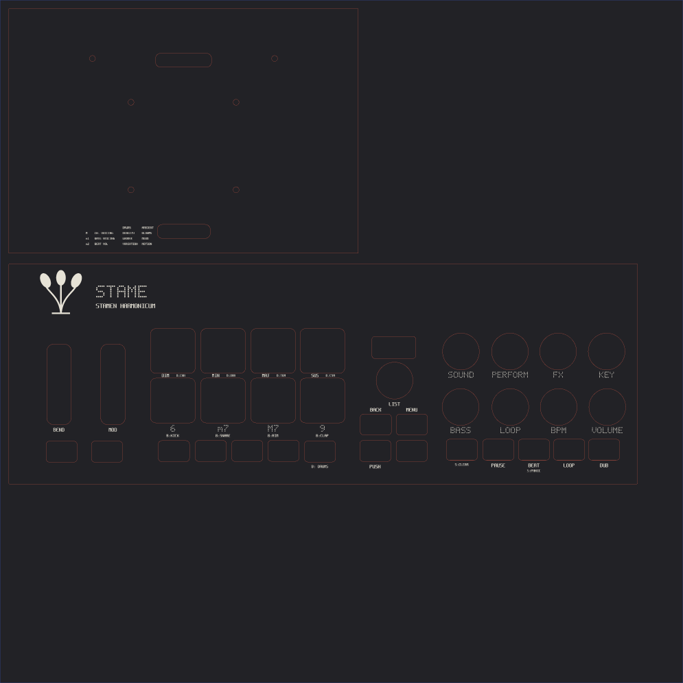


The Flip's cradle and visor
A low tray with one cut-out for the jack and the USB-C, open at the back and at the shoulders; a visor that follows the screen at 65°.
Pad cradle, holder, brackets
The cradle that holds the pad at the height of the top, printed standing up without supports; the hub holder; six M3 brackets between base and sides.
Felt
1 mm adhesive felt strips on the support layers: the top rests on them at the height of the MPK and does not rattle.
Clear keycaps, hub, screws
Fifteen clear two-layer keycaps for Cherry MX, a USB hub up to 142 × 58 × 17.5 mm (better a plain USB 2.0 one without Power Delivery), two 90° USB-C cables, M3 × 10 screws and nuts, 3 × 12 wood screws, six rubber feet.
Measured from photographs, checked on paper.
Every measurement lives in one file, misure.py, with its source: [M] manual or datasheet, [O] observed, [D] deduced, [V] to verify. The MPK's controls were measured on a photo from above whose scale holds on both axes, to about a millimetre; the macro pad on ten photos from above and from the side for the layers and the heights, and with a tape measure laid on its plate for the outline (185 × 75 mm, with its front lobe), the knobs, the USB-C socket and the switch on the back; the Flip's ports on two photos that agree within half a millimetre.
Building the 3D model from the parts found real mistakes before any wood was cut: walls overlapping the shelf, screws outside the walls, a cradle covering the shoulder buttons, holes on the mask overlapping, and the engraving on the sides coming out mirrored. Now the generator refuses an engraved part that would read backwards.
The three checks left
- Print the mask's template at 100 %, check the 100 mm ruler, lay it on the MPK.
- Cut a test piece to set the laser and the play of the tabs (0.2 mm a side).
- Check the heights: the MPK's panel and small buttons, the pad's body and its USB-C socket, how far the Flip opens (it needs 115°).
The same console, all printed, in trays.
For whoever has a 3D printer and no laser. The frame does not copy the laser parts: it is printed in trays, stretches of the console already assembled, standing on their floor on the bed. Each tray has its floor, the side with its profile, the back with its openings, the rib with the cable passage and the ledges for the top; the right one also the pad's cradle, the hub holder and the post. No brackets, no tabs, no glue. On a 240 bed (the Kobra S1) there are three trays, each the full depth; on a 220 bed six. The parts that come off to reach the cables stay separate, the mask in two halves and the Flip's deck, and so do the Flip's cradle and the screen frame. About 1 kg of PETG or PLA.
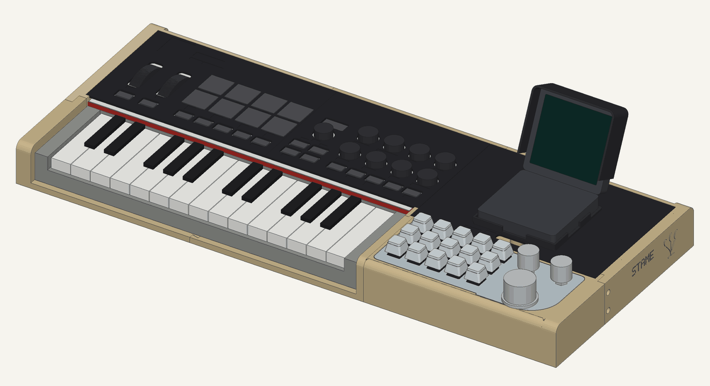
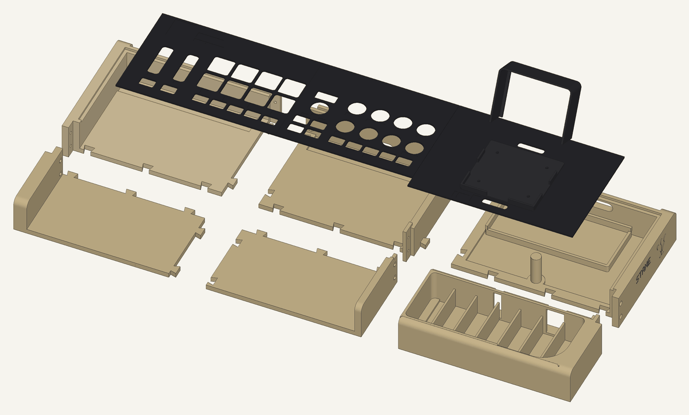
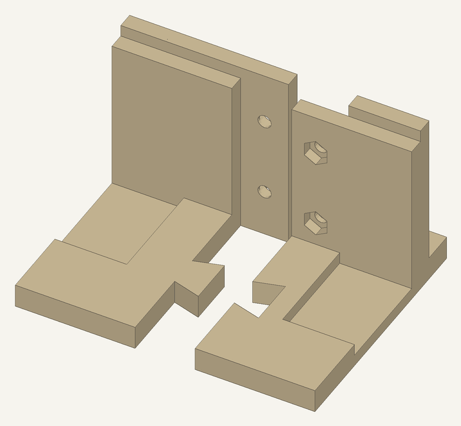
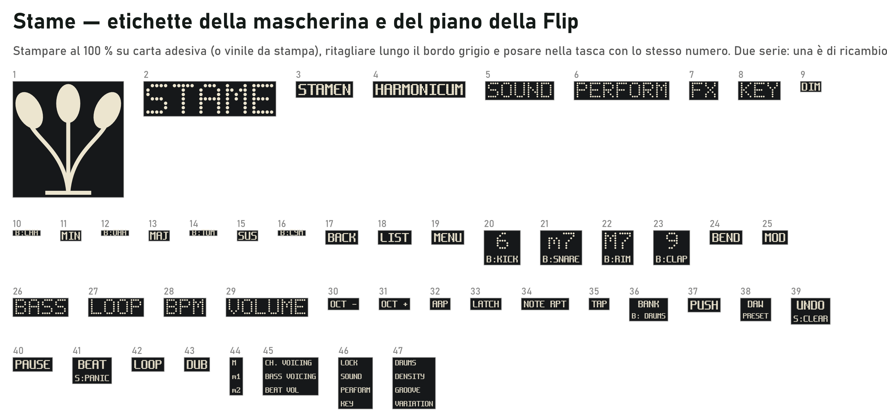
Instructions for the printed version
The parts with their sizes and weights, the settings, how the trays join, the lettering and the assembly (in Italian).
Twelve files
Each one the right way round, the trays standing, within a 210 × 210 mm bed; with stampa3d.py --piatto 240 there are three trays.
Labels
To print at 100 % on sticker paper, with the map of the pockets and a spare set.
Multicolour: the printer writes the labels
With a multi-filament printer (like the Anycubic Kobra S1 with the ACE Pro) there is one more version, next to this one, for a 240 bed: the same three trays, with the labels printed in the other colour and inlaid flush, three layers deep. The mask and the Flip's deck are printed with the visible face on the bed: it comes out smooth, and the filament changes only happen in the first three layers. On the trays the mark and the name are in the outer face of the side, which is vertical when printed standing: there the filament changes in every layer of the lettering. The labels are redrawn in Matrice, Stame's 5×7 face, with 0.45 mm squares; the decks are black with sand lettering, the trays frame-coloured with black lettering. Each labelled part is a 3MF with both parts and the filaments already assigned.
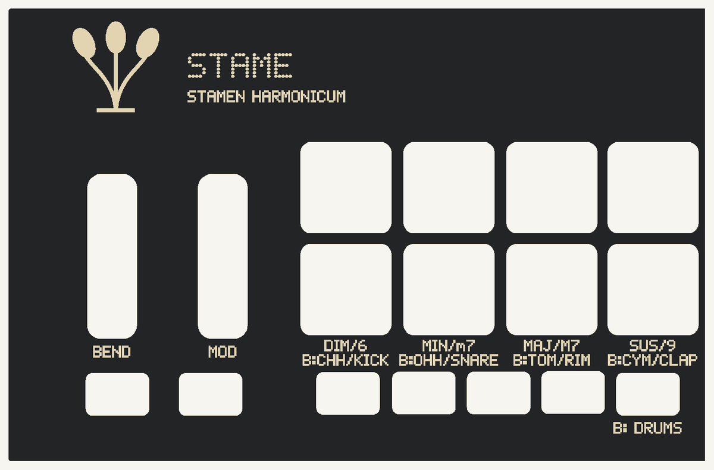
Everything regenerates from one table of measurements.
Assembly instructions
Parts and hardware, one step per page, the checks at the end. In Italian.
Cutting sheets
The five sheets 1:1 and the mask's paper template; SVG for LightBurn, DXF for anything else.
Printed parts and labels
Already turned the right way and resting on the bed; the labels on one A4.
Models and renders
SketchUp with one scene per step, OBJ in millimetres, the Blender scene that makes these renders.
python -I hardware/case/genera.py # parts, cutting sheets, STL
python -I hardware/case/assieme.py # 3D model, assembly drawings
python -I hardware/case/stampa3d.py # the all-printed console, in trays
python -I hardware/case/manuale.py # PDF: instructions, cutting sheets, printed version
python -I hardware/case/etichette.py # the keycap labels
python -I hardware/case/rendering.py # Blender renders (Cycles, GPU)The scripts, the measurements and the notes are in hardware/case; the requirements in the specification of the case.